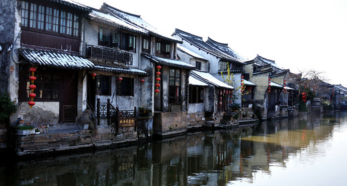

最美西塘古镇


江南六大古镇之一，是活着的千年古镇，早已被列入世界历史文化遗产预备名单。
西塘最大的特点是临河的街道都有廊棚，总长近千米，来这里游玩，雨天不淋雨，晴天太阳也晒不到。
古镇内有保存完好的明清建筑群多处，例如种福堂、尊闻堂、 薛宅等，这些建筑古老而又朴素。
傍晚，夕阳斜照，渔舟唱晚，灯火闪耀，酒香飘溢，整座水乡古镇似诗如画。
必游景点
-
烟雨长廊：廊棚也叫雨廊，不少江南古镇都有，外观看来就是有木柱支撑、带有瓦片屋顶的街道。而西塘的廊棚最有特色，因为只要你在古镇内沿河行走，头顶上总会有廊棚为你遮风挡雨。有的廊棚还设有靠背长椅，可供人休息，河两岸的廊棚之间还有数座石桥相连。漫步在廊棚下，或找一家沿河茶坊搭两把椅子坐在河边，边享受着河风边品茶闲聊，绝对是神仙般的悠闲。电影《碟中谍3》中，阿汤哥一路飞奔至送子来凤桥的镜头就是这段长廊去取的景。
-
送子来凤桥：送子来凤桥位于西塘风景区小桐街东侧，当地人也叫它“晴雨桥”。一是它连接眼雨长廊，在古镇游览的核心位置；二是由于它的造型别致，又有“送子来凤”的寓意，是西塘众多古桥中游人必到的一座。这是一座三孔石板桥，宽约10米，桥顶有棚可以遮阳避雨，两侧有护栏和长条石凳，走累了可以在这儿小憩一下，看景拍照都很不错。
-
烧香港：烧香港是西塘古镇最早的繁华中心，烧香港以河得名，从鲁家桥到五福桥之间的一条河叫烧香港，港的北岸、南岸街道则由此称为烧香港北街、南街，统称烧香港。北街上有圣堂庙，出五福桥有福源宫、东岳庙，香火旺盛。烧香港的“港”字有两个含义：一为街道，二为河港。早期是富人居住的地方，所以烧香港里的建筑有一个显著的特点：门槛特别高，有一尺多，用整条的石头做成。沿着水边的街巷走走，满眼是古旧的建筑，仿佛回到了那个时代。
景区类型：乡村
开放时间：全天开放 小景点开放时间：周一至周五07:30~17:30，周六至周日07:30~18:30。
门票：100.00元（含古镇内11个小景点）
3-4月最佳。春天是去西塘的最佳时节，4月的江南飘着蒙蒙细雨，在雨中的西塘漫步赏着樱花非常惬意。 夏天的西塘比较炎热，不过走在烟雨长廊可免受日晒，而且可品尝此时才有的特产“六月蟹”。 秋天的西塘是一个桂花飘香的地方，在这里可以体会到秋天的宁静。 在西塘，冬天也别有一番风味，可与水乡人民一起体会古镇春节的味道。
西塘地处浙江省嘉兴市嘉善县。县内没有机场和火车站。 乘飞机的游客可以取道杭州以及上海的机场。 火车、汽车均可先到嘉善，再转大巴车至西塘，大约20分钟。 从上海到西塘，需在上海南站或者汽车客运总站乘坐大巴车，需要2小时左右。 从杭州到西塘，需在九堡客运中心乘坐大巴车，2小时左右可以到达。 西塘古镇内部主要是步行游玩，也可以乘木船游览。
各位游客de评论
第一位
去的时候天气很好 高铁站就有直达的公交车 也有小巴车。公交车2元，直达车8元。现在各个小路口全部栏掉了有保安收门票不能进了。最好是下午去，晚上他们就下班了可以随意进出了。里面各种清吧 还有几个很嗨的小酒吧，别的特色小店也很多，划划小船什么的。商业气息还是挺重的。朋友好几个人一起去的，晚上去了小酒吧各种嗨。没拍几张照片 古镇的话其实都是大同小异的。
第二位
-
西塘入口很多 不要从大门进就不用买票 因为是星期日去星期一回 住了星期天晚上 客栈尤其便宜 人也不拥挤 体验还好 景点没什么意思 就西园和倪宅可看度高 联票都没必要买 晚上挑一个驻唱歌手听着不错的小酒吧小酌两杯 吃饭酒吧花的比较多 夜景很美 工作日走走像散心 双休日去那就是找罪受
第三位
江南的古镇，各有特色。西塘号称活着的千年古镇，景区内最奇特的当属烟雨长廊，沿着河边近1000米，可以遮阳避雨。河边的老房子上都挂满了红灯笼，一到夜间灯火通明，晚上的游船生意最好，每条游船上也亮起红灯笼。下午的古镇内游客最多，每条小巷都挤满了人。建议在古镇住一晚，可以欣赏下午，晚上以及早上的水乡古镇，姿色各异。
{kind=link}